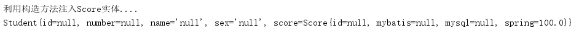
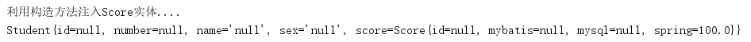

Spring IoC

文章目录
Spring IoC基本概念
控制反转（IoC，Inversion of Control） 是Spring框架的基础，也是Spring的核心理念，用于消减计算机程序的耦合的问题。 依赖注入（DI，Dependency Injection）是IoC的另外一种说法 ，只是从不同角度描述相同的概念。
当一个Java对象调用另一个对象时，传统编程模式下，我们通常使用new的方式创建一个对象，这种方式会增加调用者和被调用者之间的耦合性，不利于后期的维护和升级。Spring框架的出现就是为了解决这个耦合的问题。其中重要的两个概念如下：
- 控制反转：调用者不再通过new的方式创建被调用者对象，而是由Spring容器来负责创建，创建对象的控制权由调用者转移到了Spring容器，控制权发生了反转，此所谓 控制反转 。
- 依赖注入：调用者组合被调用者时，Spring容器负责将被依赖的对象赋值给该组合成员变量，相当于为调用者注入了它所依赖的实例，此所谓 依赖注入 。
综上所述， 在Spring中实现控制反转的是IoC容器，其实现方法是依赖注入。
Spring IoC容器
实现控制反转的是Spring IoC容器。 Spring IoC容器的设计主要是基于BeanFactory，ApplicationContext两个接口。
BeanFactory
BeanFactory是一个管理Bean的工厂，主要负责初始化各种Bean。此接口主有多个实现类，比较常用的是XmlBeanFactory，该类会根据XML配置文件中的定义来装配Bean（需要提供XML文件的绝对路径）。此种方法已过时，不推荐使用了。一个例子如下：
1 2 |
XmlBeanFactory xmlBeanFactory = new XmlBeanFactory(new FileSystemResource("E:\\ideaProject\\SpringTest\\res\\spring\\applicationContext.xml"));
Student student =(Student) xmlBeanFactory.getBean("student"); |
ApplicationContext
ApplicationContext接口是BeanFactory的子接口，也称为 应用上下文 ，ApplicationContext接口除了包含BeanFactory接口的所有功能意外，还添加了对国际化、资源访问、事件传播等内容的支持。创建ApplicationContext接口实例通常有三种方法：
- 通过ClassPathXmlApplicationContext创建。
- 通过FileSystemXmlApplicationContext创建。
- 通过Web服务器实例化ApplicationContext创建。
方式1的实例代码如下：
1 2 3 4 5 |
//利用ApplicationContext实现控制反转
ClassPathXmlApplicationContext applicationContext = new ClassPathXmlApplicationContext("spring/applicationContext.xml");
Student student0=(Student)applicationContext.getBean("student");
student0.setName("GIAO！");
System.out.println(student0); |
方式2的实例代码如下（需要XMl配置文件的绝对路径）：
1 2 3 4 |
FileSystemXmlApplicationContext applicationContext = new FileSystemXmlApplicationContext("E:\\ideaProject\\SpringTest\\res\\spring\\applicationContext.xml");
Student student=(Student)applicationContext.getBean("student");
student.setNumber(4041);
System.out.println(student); |
方式3，需要在j2ee项目的web.xml中进行配置，以后等到mvc再举例。
依赖注入的类型
Spring的依赖注入通常有两种实现方式，如下：
- 构造方法注入。
- 属性的setter方法注入。
模拟需求
下面将模拟Student实体依赖Score实体（学生组合一个成绩属性）的需求来进行构造方法注入和属性的setter方法注入的实验（在Student实体中注入Score实体）。
Student实体类的代码如下：
1 2 3 4 5 6 7 8 9 10 11 12 13 14 15 16 17 18 19 20 21 22 23 24 25 26 27 28 29 30 31 32 33 34 35 36 37 38 39 40 41 42 43 44 45 46 47 48 49 50 51 52 53 54 55 56 57 58 59 60 61 62 63 64 65 |
public class Student {
private Integer id,number;
private String name,sex;
private Score score;
public Student() {
}
public Student(Score score) {
this.score = score;
System.out.println("利用构造方法注入Score实体....");
}
public Integer getId() {
return id;
}
public void setId(Integer id) {
this.id = id;
}
public Integer getNumber() {
return number;
}
public void setNumber(Integer number) {
this.number = number;
}
public String getName() {
return name;
}
public void setName(String name) {
this.name = name;
}
public String getSex() {
return sex;
}
public void setSex(String sex) {
this.sex = sex;
}
public Score getScore() {
return score;
}
public void setScore(Score score) {
this.score = score;
System.out.println("使用属性的setter方法完成注入....");
}
@Override
public String toString() {
return "Student{" +
"id=" + id +
", number=" + number +
", name='" + name + '\'' +
", sex='" + sex + '\'' +
", score=" + score +
'}';
}
} |
Score实体类的代码如下：
1 2 3 4 5 6 7 8 9 10 11 12 13 14 15 16 17 18 19 20 21 22 23 24 25 26 27 28 29 30 31 32 33 34 35 36 37 38 39 40 41 42 43 44 45 46 47 48 49 50 51 52 53 54 55 56 |
public class Score {
private Integer id;
private Float mybatis,mysql,spring;
public Score(Integer id, Float mybatis, Float mysql, Float spring) {
this.id = id;
this.mybatis = mybatis;
this.mysql = mysql;
this.spring = spring;
}
public Score() {
}
public Integer getId() {
return id;
}
public void setId(Integer id) {
this.id = id;
}
public Float getMybatis() {
return mybatis;
}
public void setMybatis(Float mybatis) {
this.mybatis = mybatis;
}
public Float getMysql() {
return mysql;
}
public void setMysql(Float mysql) {
this.mysql = mysql;
}
public Float getSpring() {
return spring;
}
public void setSpring(Float spring) {
this.spring = spring;
}
@Override
public String toString() {
return "Score{" +
"id=" + id +
", mybatis=" + mybatis +
", mysql=" + mysql +
", spring=" + spring +
'}';
}
} |
构造方法注入
Spring容器可以采用Java的反射，通过构造器方法完成依赖注入。编写Spring容器的配置文件如下：
1 2 3 4 5 6 7 8 9 10 11 12 |
<?xml version="1.0" encoding="UTF-8"?>
<beans xmlns="http://www.springframework.org/schema/beans"
xmlns:xsi="http://www.w3.org/2001/XMLSchema-instance"
xsi:schemaLocation="http://www.springframework.org/schema/beans http://www.springframework.org/schema/beans/spring-beans.xsd">
<!--将Score交给Spring管理-->
<bean id="score" class="pojo.Score"/>
<!--将Student交给Spring管理-->
<bean id="student" class="pojo.Student">
<constructor-arg name="score" ref="score"/>
</bean>
</beans> |
在main方法中获取id为student的bean，测试代码如下：
1 2 3 4 5 6 |
public static void main(String[] args) {
ApplicationContext applicationContext =new ClassPathXmlApplicationContext("spring/applicationContext.xml");
Student student=(Student)applicationContext.getBean("student");
student.getScore().setSpring(100F);
System.out.println(student);
} |
执行结果如下：

可以看到，我们在Spring配置文件中，将Student交给Spring管理时，指定了利用 <constructor-arg> 元素来执行构造方法注入了一个Score对象。 <constructor-arg> 元素的几个属性说明如下：
| 属性 | 说明 |
|---|---|
| name | 构造方法中的某个形参名 |
| index | 构造方法中的某个形参的索引 |
| type | 构造方法中的某个形参的类型 |
| ref | 给构造方法某个形参指定某个实例的引用 |
| value | 给构造方法的某个形参指定一个常量 |
属性的setter方法注入
JavaBean的定义规范就得有属性得setter方法，而我们常常操作的就是JavaBean,所以此种利用属性的setter方法完成依赖注入的方式最为流行。更改Spring的配置文件如下：
1 2 3 4 5 6 7 8 9 10 11 12 |
<?xml version="1.0" encoding="UTF-8"?>
<beans xmlns="http://www.springframework.org/schema/beans"
xmlns:xsi="http://www.w3.org/2001/XMLSchema-instance"
xsi:schemaLocation="http://www.springframework.org/schema/beans http://www.springframework.org/schema/beans/spring-beans.xsd">
<!--将Score交给Spring管理-->
<bean id="score" class="pojo.Score"/>
<!--将Student交给Spring管理-->
<bean id="student" class="pojo.Student">
<property name="score" ref="score"/>
</bean>
</beans> |
测试代码如下：
1 2 3 4 5 6 |
public static void main(String[] args) {
ApplicationContext applicationContext =new ClassPathXmlApplicationContext("spring/applicationContext.xml");
Student student=(Student)applicationContext.getBean("student");
student.getScore().setSpring(100F);
System.out.println(student);
} |
测试结果如下：

可以看到，现在调用的就是Student的属性score的setter方法来完成注入的。
文章作者 P1n93r
上次更新 2019-11-12